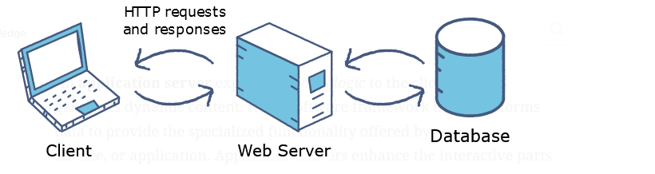
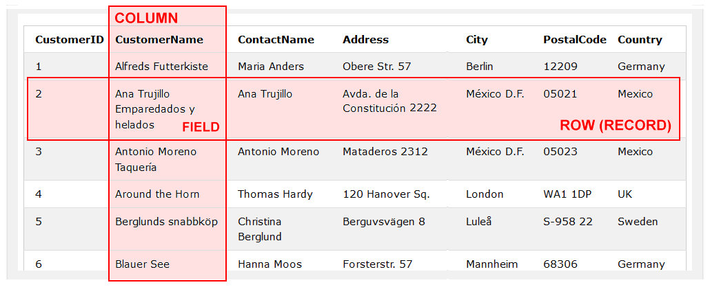

In this Tutorial you will learn that:
A relational database management system (RDBMS) is just another software program – like Microsoft Word, Mozilla Firefox or Abobe Photoshop.
Whereas Photoshop is for creating and working with images, an RDBMS is for creating and working with databases.
A database is simply an organised collection of data. Here are some examples of databases:
Relational database management systems are generally referred to more simply as just ‘relational databases’.
The language used to interact with an RDBMS is called SQL (and pronounced sequel).
For this reason, the terms ‘relational database’ and ‘SQL database’ are used interchangeably. The two terms mean the same thing.
Here are some popular relational database products:
Not all databases are relational databases. So-called No-SQL databases such as MongoDB and Google's Firebase are becoming increasingly popular.
One reason for their popularity is that web developers can interact with No-SQL databases using only JavaScript. No server-side programming language such as PHP is required.
Modern websites typically use databases as a back end for storing data. And where the database is a relational one, web developers use the SQL language to interact with that data.
While websites visitors don’t directly interact with the database, their activities – such as signing up or signing in, selecting which products to display, and making purchases – are translated into SQL commands that update the information stored in the database.
In WordPress, for example, SQL databases are used ‘behind-the-scenes‘ to store posts, author information, comments and other details. Only WordPress developers actually interact with SQL, and then only to create a plugin or debug some issue.
For some reason, databases are typically shown in diagrams in the shape of a cylinder.
Source: educative.io
In an SQL database, the content is organised in the form of tables.
Each table contains horizontal (left-to-right) rows and vertical (top-to-bottom) columns of data in a grid layout.
You can think of tables are similar to spreadsheets in Microsoft Excel or Google Sheets.
The example above is from the Customers table of Northwind Traders, a free sample database provided by Microsoft with their Access product.
The intersection of any column and row is known as a field.
In a relational database, each record in a table must contain a so-called primary key. This uniquely identifies each record in the table. Examples of primary keys would CustomerID or ProductID.
Organisations use separate tables within a common database for storing different types of information. An e-commerce company, for example, might have separate tables for the following: customers, products and orders.
The ‘relational’ in relational databases comes from designing the layout of the individual tables in such a way that the information they contain can be linked together in an efficient manner.
Return to Contents.